> 회사소개 > 회사연혁
회사연혁
현대로템의 새로운 이야기가 쓰여지기까지의 성장의 기록을 소개합니다.
2021~2019
수주의 연속성과 동력분산식 고속열차
2021 ~
2019
2019
- 2021
- 동력분산식 고속열차 KTX-이음 영업운행 돌입
탄자니아 전동차 및 전기기관차 수주
국내 첫 다목적 무인차량 납품
지속가능경영보고서 첫 발간
캐나다 에드먼턴 트램 수주
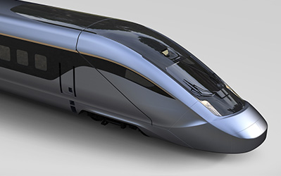
- 2020
- GTX-A 전동차 수주
싱가포르 LTA 무인전동차 186량 수주
차륜형지휘소용차량 체계개발 완료
의왕 수소추출기 공장 구축 및 가동 착수
K2전차 3차양산 계약 체결
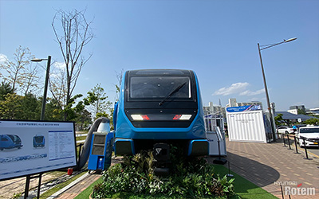
- 2019
- 폴란드 바르샤바 트램 수주
장애물개척전차 초도 양산 수주
아일랜드 디젤동차 수주
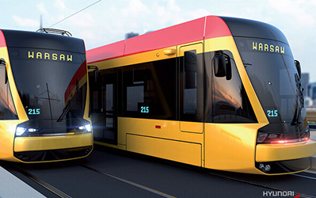
2018~2016
기술을 바탕으로 이한 고속성장
2018 ~
2016
2016
- 2018
- 동북선 경전철 50량 및 턴키사업 수주
차륜형장갑차 초도양산 물량 납품
대만 철도청 교외선 전동차 520량 수주
대만 도원시 녹선 무인경전철 80량 및 턴키사업 수주
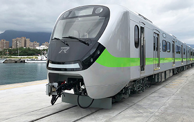
- 2017
- 우크라이나 전동차 유지보수 추가 5년 연장 계약
인도 아메다바드 전동차 사업 수주
코레일 경인선, 과천·안산선 전동차 사업 수주
서울시 2호선 전동차 사업 수주
K1·K1A1전차 창정비 사업 수주
카이로 3호선 전동차 및 유지보수 사업 수주
인도네시아 자카르타 경전철 사업 수주
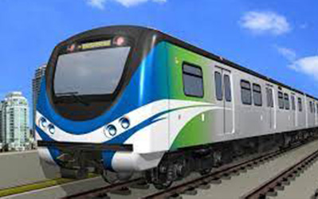
- 2016
- 브라질 현지 철도차량 생산공장 완공
필리핀 마닐라 지하철 턴키사업 수주
호주 시드니 2층 전동차 사업 수주
코레일 동력분산식 고속차량 수주
차륜형 장갑차 체계개발 완료
차륜형 장갑차 초도양산 계약 체결
한국중부발전 보령화력 3부두 석탄취급설비 수주
현대제철 순천 단조 정상화 설비 공급
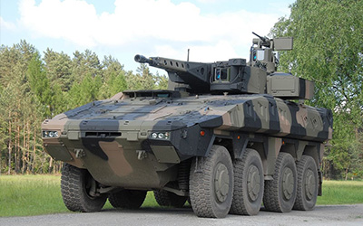
2015~2013
첫 발걸음 그리고 도약
2015 ~
2013
2013
- 2015
- 텐덤 프레스 전용 고속 이송장치 국산화 성공
현대제철 당진공장 특수강 설비 완공
K2 전차 1차 양산 종료
차륜형 전투차량 운용시험평가 종료
코트디부아르 아비장 도시철도 사전공사 수주
튀르키예 안탈리아 트램 수주
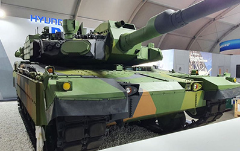
- 2014
-
튀르키예 무인전동차 68량 수주
K2 전차 2차 양산 계약 체결
카타르서 3500억 하수처리설비 수주
성남여주선ㆍ동해남부선 전동차 22편성 수주
제너럴모터스(GM) 랜싱공장 프레스설비 1차분 공급계약 체결
튀르키예 이즈미르시에 첫 트램 수주
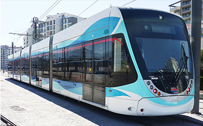
- 2013
- 인도 델리메트로 3기 전동차 수주
브라질 상파울로 교외선 전동차 수주
김포 도시철도 차량 / E&M 사업 수주
K1전차 및 K1A1전차 성능개량 사업 수주
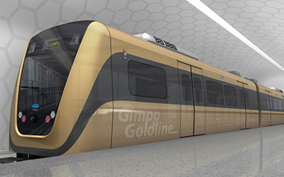
2012~2010
기술을 바탕으로 이한 고속성장
2012 ~
2010
2010
- 2012
- 호남고속전철 수주
튀르키예 이즈미르 전동차 수주
포드 자동차 인도공장 생산설비 수주
1000톤 서보프레스 국산화 개발
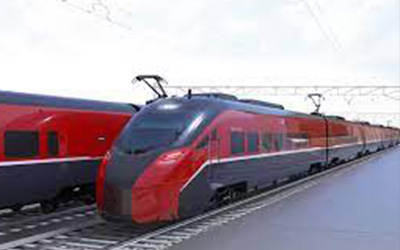
- 2011
-
한국철도공사 간선형(150km/h) 전동차 수주
현대제철 당진 일관제철 수주(제선, 제강, 연주, 압연, 부대설비)
하이스코 당진 신설 냉연설비 일괄수주
르노 모로코, 루마니아 5,400톤 탠덤 프레스라인 수주
현대자동차 북경공장 5,400톤 트랜스퍼 프레스 수주
능동파괴체계 개발
소부대전술모의훈련장비 1차 양산 수주
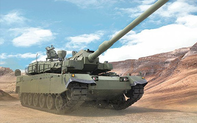
- 2010
- K2전차 양산계약 체결
튀르키예 전기기관차 수주
우크라이나 고속전동차 수주
미국 덴버전동차 수주
방글라데시 디젤기관차 수주
서울시 지하철 9호선 추가 수주
포드 태국공장 의장 운반설비 수주
현대자동차 체코공장 5400톤 트랜스퍼 프레스 수주
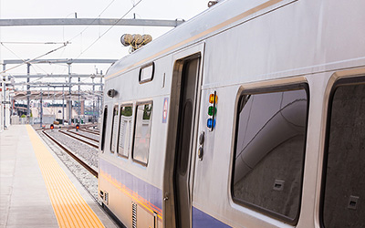
2009~2005
고속철도와 전동차로의 변환점 그리고 K2 전차
2009 ~
2005
2005
- 2009
- 그리스 아테네 2ㆍ3호선 전동차 수주
인도 방갈로 전동차 150 량 수주
인천도시철도 2호선사업 공급계약 체결 (74량)br 한국철도공사 경춘선 좌석형 전기동차 수주 (56량)
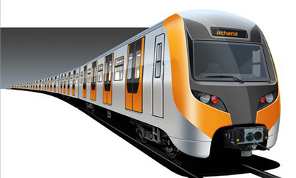
- 2008
-
K2 전차 개발
전라호남선 고속전철(KTX-산천) 50량 수주
튀르키예 마르마라이 전동차 440량 수주
현대자동차 러시아공장 풀라인 자동차생산설비 수주
튀르키예 투바사스(Tuvasas) 디젤동차 기술이전 및 부품 공급계약 체결
튀르키예 오토카르(Otokar) 전차개발 기술협력 계약 체결
미국 소프트웨어공학연구소(SEI) CMMI Level 3 인증 획득
오만 무스캇市 수처리 플랜트 수주
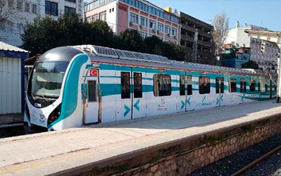
- 2007
- "현대로템주식회사"로 사명 변경
전라호남선 고속전철(KTX-산천) 90량 수주
현대제철 일관제철 연주설비 수주
브라질 상파울로 지하철 4호선 전동차 수주
신분당선 무인운전 전동차 신호시스템 수주 K2전차 시제품 출고
- 2006
- 미국 펜실베니아주 남동교통국(SEPTA) 전동차 수주
미국 캘리포니아주 137량 / 플로리다주 24량 이층객차 수주
전라호남선 고속전철(KTX-산천) 100량 수주
부산-김해 무인운전 경전철 E&M 턴키사업 수주
- 2005
- "크로스바 트랜스프레서" 산업자원부, 차세대 일류상품 선정
아일랜드 디젤동차 수주
서울시 지하철 9호선 E&M 턴키사업 수주
캐나다 RAV 무인운전 경전철 수주
2004~2000
기술을 바탕으로 이한 고속성장
2004 ~
2000
2000
- 2004
- "한국형 고속전철" 산업자원부, 2003 대한민국 10대 신기술 선정
이란 디젤동차 120량 수주
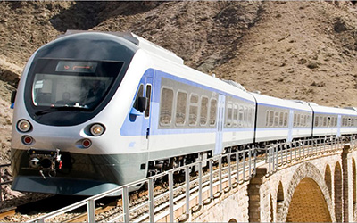
- 2003
-
신형 제독장비(KDS-1) 개발
세계 최초 리니어 서보 모듈 트랜스퍼 프레스 개발
브라질 살바도로 지하철 1호선 전동차 수주
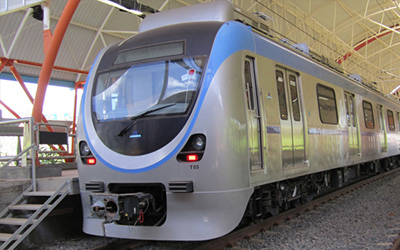
- 2002
-
"주식회사 로템"으로 사명 변경
"로템 전동차" 산업자원부, 차세대 일류상품 선정
제39회 무역의 날 ‘1억불 수출탑’ 수상
국내 최초 알루미늄 전동차 개발
- 2001
- K1A1 전차조종 시뮬레이터 개발
튀르키예 이스탄불 전동차 92량 수주
K1A1 전차포술 시뮬레이터 개발
인도 델리 DMRC 전동차 수주
현대자동차그룹 편입
- 2000
- 열차종합제어장치(TCMS), 열차자동제어시스템(ATC/ATO) 개발
1990~1970
기간산업의 시작 현대정공
1990 ~
1970
1970
- 1998
- 경부고속전철(KTX) 국산화 생산 착수
- 1997
- K1A1 전차 개발
- 1996
- 필리핀 마닐라 경전철 수주 (경전철 최초 수주)
- 1992
- K1 교량전차(AVLB) 및 구난전차(ARV) 개발
- 1990
-
인도네시아 가변전압 가변주파수(VVVF) 전동차 수주
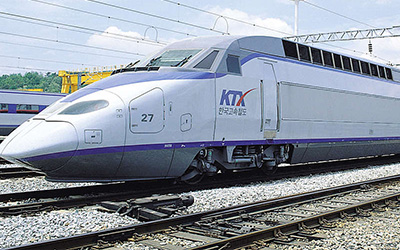
- 1988
- 도시형 자기부상열차 개발 성공
- 1985
- 스테인리스 전동차 납품 (부산시 1호선)
- 1984
-
한국형 K1전차 개발
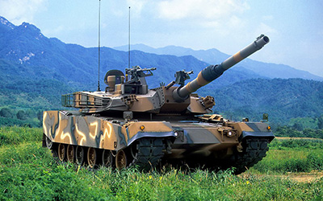
- 1979
-
플랜트사업 시작
스테인리스 전동차 납품 (부산시 1호선)
- 1977
-
회사창립
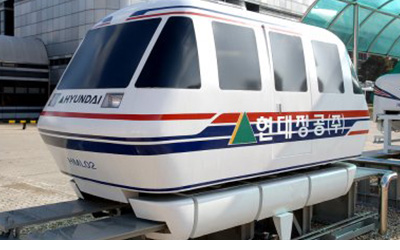